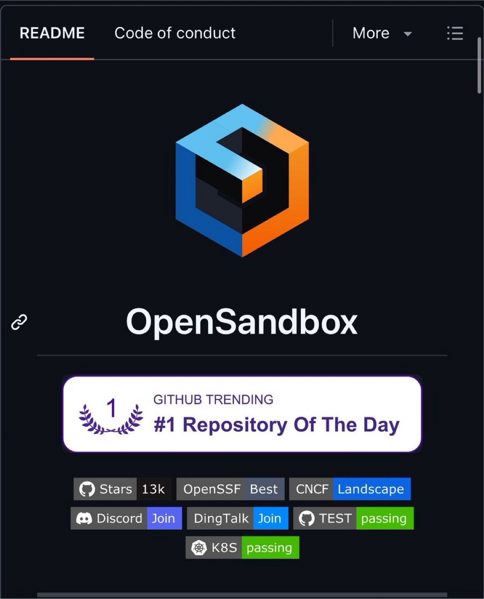

Filed 16 Aug 2026 · Published 15 Aug 2026
LinkedIn intake — OpenSandbox agent runtime security
Alibaba just open-sourced the sandbox that all AI agents needed

What the post claims
The author presents OpenSandbox as open-source infrastructure for autonomous agents to run code, browse the web, control desktops, and host coding CLIs. The post names multi-language SDKs, Docker and Kubernetes, gVisor/Kata/Firecracker runtime options, a Credential Vault, and an MCP server, and says the project is Apache-2.0 licensed and had more than 12.5k GitHub stars at posting time. These are social/project claims, not an independent security or production validation.
Media summary
One image shows an OpenSandbox GitHub README-style page with the OpenSandbox logo and a “GitHub Trending #1 Repository Of The Day” badge. It also displays badges for stars, OpenSSF Best, CNCF Landscape, Discord, DingTalk, tests, and Kubernetes. The image illustrates project branding and self-presented status only; it is not an audit, benchmark, or proof of a deployment's security posture. No video was identified.
Primary-source quick pass
A read-only inspection of the public OpenSandbox repository on 2026-08-16 pinned the default-branch HEAD at f8ed8734ce1fda69f0979f912160fb933b9bfa0c. GitHub identified it as an active Apache-2.0 project. The README documents multi-language SDKs, a CLI and MCP server, Docker/Kubernetes runtimes, coding-agent/browser/desktop examples, optional gVisor/Kata/Firecracker runtime configuration, egress controls, and a Credential Vault.
The project documentation describes an egress sidecar that shares the workload network namespace, supports FQDN/IP/CIDR policy, and recommends dns+nft for strict default-deny enforcement. It says the application container remains unprivileged while the sidecar needs CAP_NET_ADMIN; it also documents service-mesh incompatibility and an experimental transparent HTTPS MITM path. The Credential Vault documentation says real credentials are held in the egress sidecar, while sandbox processes receive placeholders; it requires a declared outbound policy and says Kubernetes pause/resume requires trusted re-injection because vault entries are in-memory.
This verifies documented project capabilities, not a deployment's actual configuration or the security properties of every runtime. No installation, runtime execution, security audit, escape test, penetration test, benchmark, or independent replication was performed. See wider-web-research.md for the focused source review.
Book relevance
High relevance for chapters on agent runtime security, tool execution, secrets boundaries, network governance, and reversible autonomy.
Candidate claim/example: autonomous agents need an execution perimeter with separately assessed isolation, externally enforceable default-deny egress, secret brokering that keeps credentials out of agent context, quotas, and recovery semantics. A named sandbox product is not itself evidence that those controls are correctly configured or independently tested.
Hermione relevance
High relevance. Hermione operates tools, shells, browser sessions, workers, and content-derived workflows. The practical lesson is to keep credential delivery outside model/tool context, constrain outbound network access independently of the workload, use disposable/revertible execution where untrusted code is involved, and verify the real runtime mode rather than trusting a “sandboxed” label. Before adopting OpenSandbox or a comparable runtime, Hermione should require a threat-model review, explicit egress-policy tests, credential lifecycle/rotation behavior, rollback and cleanup tests, and evidence of independent security assessment.
Evidence strength and limitations
Evidence strength: moderate for the public repository's existence, Apache-2.0 license, documented component design, and stated configuration requirements; discovery-only for the LinkedIn popularity claim, real-world isolation, secure default configuration, credential safety, egress-bypass resistance, production reliability, and user outcomes.
- LinkedIn content, the attached image, and the project documentation are social or project-authored evidence, not independent validation.
- The reported GitHub popularity count is a time-bound observation and does not establish technical quality, security, or adoption outcomes.
- The secure-runtime guide explicitly leaves standard
runcas the default when no secure runtime is configured; isolation depends on administrator configuration and host/runtime setup. - The egress design has documented compatibility and operational caveats, including service-mesh conflict, DNS-only versus
dns+nftenforcement, transparent-MITM limitations, and credential-vault re-injection after Kubernetes resume. - No third-party LinkedIn links, profiles, comments, or products were clicked or evaluated through LinkedIn. Raw authenticated browser material is local-only, and visible comments were not expanded.